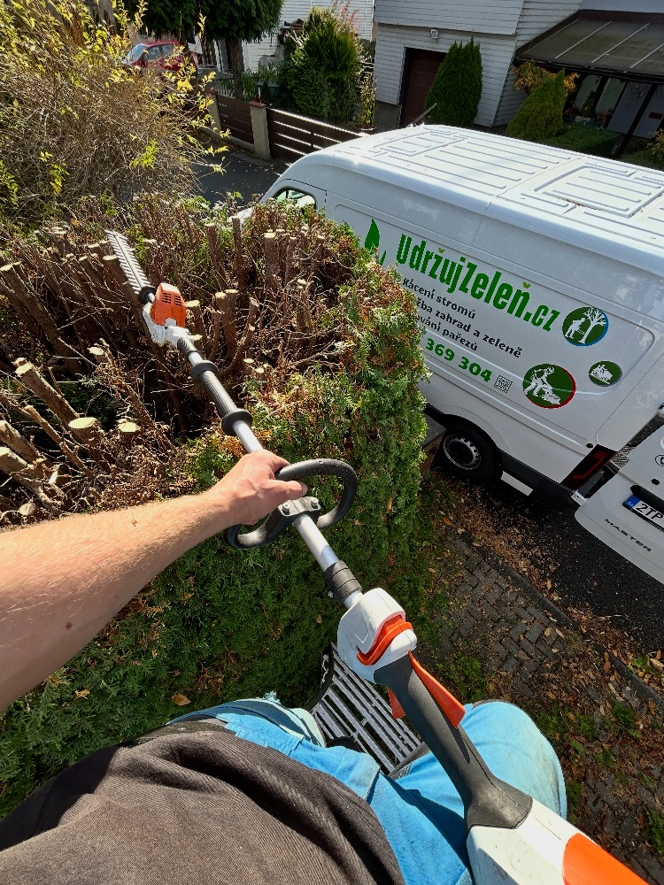
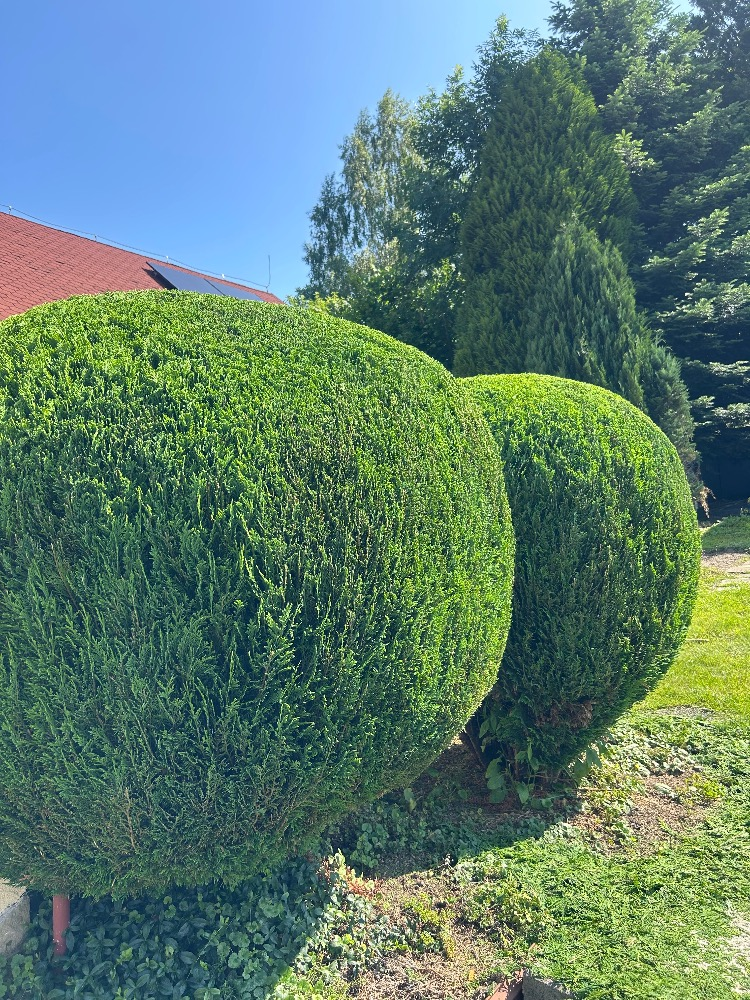

Péče o zeleň, která je vidět
Udržuj zeleň
Reprezentativní a dokonale upravený pozemek bez starostí a bez kompromisů.

Naše služby
Od pravidelného sečení až po náročné zásahy.
Postaráme se o pravidelnou péči i náročnější zásahy, které vyžadují zkušenost, techniku a čisté dokončení bez zbytečného chaosu.

Košení trávy
Kompletní péče o váš trávník od precizního sečení a začištění detailů až po finální úklid, aby okolí vašeho domu vypadalo po celý rok reprezentativně.
Mulčování trávy
Rychlé a efektivní sečení vysoké i husté trávy se současným drcením porostu, čímž zcela odpadá starost s odvozem a likvidací bioodpadu.
Stříhání živých plotů
Zajišťujeme pravidelný tvarovací i radikální zmlazovací řez keřů a živých plotů pro jejich zdravý růst a perfektní vzhled včetně následného odvozu odpadu.
Frézování pařezů
Profesionální odstranění pařezu do hloubky 20 cm pod úroveň terénu, díky čemuž je místo ihned připravené k zasypání a dalšímu využití.
Firemní a bytové areály
Pravidelný servis, který udrží okolí firmy nebo objektu v perfektním stavu po celý rok.
Jednorázové zásahy
Rychlá pomoc před sezonou, po zanedbání péče nebo před důležitou návštěvou či akcí.
Ceník služeb
Přehled orientačních cen.
Košení trávníků
od 2,50 Kč / m²
Vertikutace
od 6 Kč / m²
Hnojení trávníku
od 6 Kč / m²
Mulčování trávy
od 2 Kč / m²
Stříhání živých plotů
25 - 50 Kč / m²
Frézování pařezu
od 20 Kč / 1 cm průměru
Rekultivace pozemku
individuálně
Doprava
20 Kč / km

Orientačně
Uvedené ceny jsou pouze orientační. Každá zakázka je individuální /odlišná. Pokud máte zájem o naši práci neváhejte nás kontaktovat a my vám vytvoříme cenovou nabídku pro poptávané práce zcela ZDARMA.
Proč si vybrat právě nás
Vaše zahrada si zaslouží maximální péči. Dovolte nám ji pro vás zajistit.
Upravený pozemek dělá dojem na první pohled. Dům, firma i zahrada působí čistě a profesionálně.
Po dokončení vše uklidíme a odpad odvezeme. Nezůstane po nás nepořádek, ale hotový výsledek.

Platí, na čem se domluvíme. Přijdeme včas a práci odvedeme bez zbytečných řečí.
Stačí zavolat nebo napsat. Domluvíme cenu, termín a vy se o nic nestaráte.

Ukázky realizací
Realizace, které mluví za nás.
Reálné ukázky údržby zeleně, zahradnických prací a zásahů v terénu.


Reference
Skutečné recenze od klientů.
Kontakt
Chcete, aby váš pozemek vypadal přesně tak, jak má?
Ozvěte se telefonicky, e-mailem nebo přes sociální sítě. Domluvíme termín, rozsah práce a jasnou cenu.
Působnost: okolní obce, města i firemní areály
Napsat poptávku